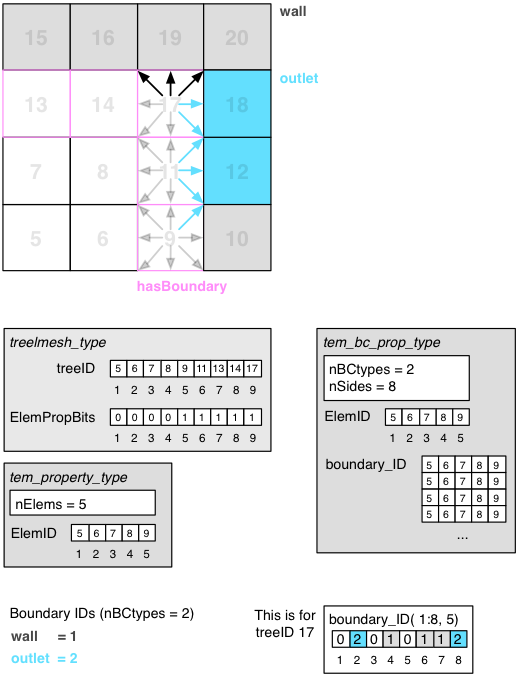

Definition of the boundary property for elements
The has-boundary tem_property_module highlights an element that has at least one side with a boundary condition. Therefore the neighbor on this side is not part of the computational domain, and needs to be treated accordingly. For all elements with the has-boundary property, the boundary conditions are stored for all sides. Yet this is done in a elementwise manner to allow arbitrary distribution of the elments to parallel processing units. The appropiate handling of the boundaries is solver specific and left to them.
Each boundary is identified by a unique number (ID), which starts from 1 and ranges up to the number of existing boundaries (nBCtypes). In the solvers, the labels of the boundaries attached to the boundary IDs in the array of strings BC_label are analyzed in order to treat the boundaries adequately.
For each element with the has-boundary property, a boundary ID is assigned for each of the 26 direct neighbor directions. This is done in the two-dimensional array boundary_ID, where the first dimension has nSides entries and the second dimension has as many entries as there elements with the has-boundary property on the local partition. For regular fluid neighbors, the boundary ID is set to zero in the respective direction.

To attach boundary conditions a bit is set for an element to indicate that any of its sides has a boundary condition attached to it. For all elements with this property and only those elements, boundary conditions on every side of the element are stored. This data is put in a separate file, containing the boundary conditions per side for all elements with the boundary property. The binary file has the same number of integer entries for all elements and can therefore be easily accessed on an elemental basis. In this list of elements the ordering from the complete mesh is preserved. To describe the meaning of each boundary condition, indicated by an integer number, there is an additional header file with labels for each type of boundary condition in the mesh. Only positive integers are considered as boundary entries, zeros indicate no boundary in the corresponding direction, and negative numbers are reserved for references on treeIDs as neighboring element. Directly referencing a certain treeID instead of a boundary condition on one of the sides of an element is used to implement periodic interfaces within the universe cube. Due to this layout of the boundary description, the boundaries can be read in parallel with the following procedure:
With the strict ordering and uniform elemental treatment of data, the sparse property information can be accessed efficiently. Just a single collective prefix operation is required in the parallel system, while the consumed disk storage is kept at a minimum.
boundary state type definition for boundary state variable
| Type | Visibility | Attributes | Name | Initial | |||
|---|---|---|---|---|---|---|---|
| character(len=LabelLen), | public | :: | state_name |
Name of the state, this boundary condition applies to |
|||
| character(len=LabelLen), | public | :: | style |
Style of this boundary condition dirichlet = set value itself neumann = set derivative of value |
|||
| integer, | public | :: | nComponents |
Number of Components in this boundary variable. |
|||
| logical, | public | :: | isDefined |
A flag to indicate that the state is properly defined |
|||
| integer, | public | :: | varPos |
Position of variable defined for the state_name in the varSys |
|||
| type(tem_indexLvl_type), | public | :: | pntIndex |
Indices for points on the boundary, required for setup_index, getvalof_Index |
Function to load spatial, constant or temporal boundary conditions to the boundary state type (or combinations of them). or Valid definitions: Example given for state variable velocityX in variable table
| Type | Intent | Optional | Attributes | Name | ||
|---|---|---|---|---|---|---|
| type(tem_bc_state_type), | intent(inout) | :: | bc |
The boundary to fill |
||
| character(len=*), | intent(in) | :: | state_name |
The state variable to set with this boundary condition |
||
| integer, | intent(in), | optional | :: | nComp |
Number of Components in this boundary variable. |
|
| character(len=*), | intent(in), | optional | :: | style |
Style of this boundary condition dirichlet = set value itself neumann = set derivative of value |
|
| type(flu_State), | intent(in) | :: | conf | |||
| integer, | intent(in) | :: | bc_handle |
Handle to the table describing the boundary |
||
| type(grw_stringkeyvaluepairarray_type), | intent(inout) | :: | varDict |
The dictionary that contains the mapping between expected variables and the actual variables defined by the user. |
||
| type(tem_varSys_type), | intent(inout) | :: | varSys | |||
| type(tem_varSys_solverData_evalElem_type), | intent(in), | optional | :: | solverData_evalElem |
A routine that allows the construction of an element representation from a point values. |
|
| integer, | intent(out), | optional | :: | ErrCode |
Error code |